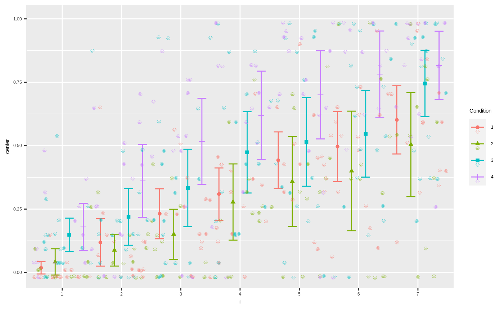

Devising custom plot layouts
Vignette5.RmdsuperbPlot comes with six built-in layouts for plotting your data. However, it is possible to add additional, custom-made layouts. In this vignette, we present rapidly the existing layouts, then show how to supplement superb with your own layouts.
The built-in plot layouts
When calling superbPlot, you use the plotStyle = "layout" option to indicate which layout you wish to use. Internally, superbPlot is calling a function whose name is superbPlot."layout". For example, with plotStyle = "line", the plot is actually performed by the function superbPlot.line.
The six layout available in superbPlot package are :
superbPlot.line: shows the results as points and lines,superbPlot.point: shows the results as points only,superbPlot.bar: shows the results using bars,superbPlot.pointjitter: shows the results with points, and the raw data with jittered points,superbPlot.pointjitterviolin: also shows violin plot behind the jitter points, andsuperbPlot.pointindividualline: show the results with fat points, and individual results with thin lines,
To determine if a certain function is superbPlot-compatible, use the following function:
superb:::is.superbPlot.function("superbPlot.line")## [1] TRUEwhere you put between quote the name of a function. When devising your own, custom-made function, it is a gook thing to check that it is superbPlot-compatible.
Devising a custom-made plot layout
The purpose of superbPlot is to
compile the summary information (location of the summary statistic, upper width and lower width of the interval) and that, for each level of the factors;
applies all the adjustments needed in producing the summary;
superbPlotalso transform to discrete factors (usingas.factor) all the factors. If some of the factors are within-subject, the information is to be found in distinct column ( remember thatsuperbPlotassumes a wide-format data frame); for between-group factors, a column indicate the current group;and finally, calls the plot function accepting pre-defined arguments
In devising your own plot function, it is important that the function accept very specific arguments with very precise names.
Here is the header for a function corresponding to a plot style called, say, foo (plotStyle = "foo"):
superbPlot.foo <- function(
summarydata,
xvar,
groupingfac,
addfactors,
Debug,
rawdata
# any optional argument you wish
) {
plot <- ggplot() ## ggplot instructions...
return(plot)
}(in what follow, I assume that one factor is placed on the horizontal axis, another one is used to group the point, and up to two additional factors will results in columns and rows of panels. Of course, in devising your own template, you may use different placement.)
The arguments are: * summarydata: this data frame will contain the column center indicating the statistic’s value, lowerwidth and upperwidth indicating how many units below and above center the error bar extends. The data frame will also have columns for all the factors, and there will be as many lines as there are combinations of factors.
xvaris the factor to put on the horizontal axis;groupingfacis the factor used to create groups of points;addfactorsare up to two additional factors to create the rows and columns of panels.addfactorsis formatted for facetting (e.g., for factors “A” and “B”,addfactorswould be “A~B”);Debug(a boolean) can be used when testing your code; it is set to TRUE with thesuperbPlotargumentDebug = TRUE;rawdata: this data.frame contains the raw data with factors being transformedas.factorand the dependent column being renamedDV. When the data are in wide format,rawdatais reshaped to long format.{optional arguments}can be used. They must be named here; when callingsuperbPlot, any argument whose name match your optional argument will be transmitted to your custom-made function.
The simplest example
What follow is a simple example that will design a template that we will call simple. This layout will display the descriptive statistics and error bars. Everything will be black and white (no color instruction) and superimposed (no grouping instruction).
The result will be:
Figure 1: Mean score with 95% confidence interval using the simple plot layout.
To make this plot, we design a function superbPlot.simple as:
superbPlot.simple <- function(
summarydata, xvar, groupingfac, addfactors, Debug, rawdata
) {
plot <- ggplot(
data = summarydata,
mapping = aes_string( x = xvar, y = "center")
) +
geom_point( ) +
geom_errorbar( mapping = aes_string(ymin = "center + lowerwidth", ymax = "center + upperwidth") )+
facet_grid( addfactors )
return(plot)
}The first instruction, ggplot defines the source data to be summarydata with horizontal axis being in the string xvar (this is the reason that mapping must be given with aes_string). The position of the descriptive statistics will be in "center".
The second instruction put points for each "center", and the third instruction places error bars. In that case, the ymin and ymax information are contained in center+lowerwidth and center+upperwidth where lowerwidth and upperwidth are in the summarydata dataframe.
The last instructions generates distinct panels for each level of the remaining factors.
You can check that this function is superbPlot-compatible with:
superb:::is.superbPlot.function("superbPlot.simple")## [1] TRUEIf TRUE, then we are ready to use this layout, here with the demo dataset TMB1964r:
superbPlot(TMB1964r,
WSFactor = "T(7)",
BSFactor = "Condition",
variables = c("T1","T2","T3","T4","T5","T6","T7"),
plotStyle = "simple", Quiet = TRUE
)Optional arguments
The above simple layout does not accept optional arguments. To integrate optional arguments, one method is to insert graphic directives inside the layers, e.g., inside geom_point.
A convenient method is with do.call and modifyList, for example
A full example it therefore
superbPlot.simpleWithOptions <- function(
summarydata, xvar, groupingfac, addfactors, Debug, rawdata,
myownParams = list() ## add the optional arguments to the function
) {
plot <- ggplot(
data = summarydata,
mapping = aes_string( x = xvar, y = "center")
) +
do.call( geom_point, modifyList(
list( color ="black" ),
myownParams
)) +
geom_errorbar( mapping = aes_string(ymin = "center + lowerwidth", ymax = "center + upperwidth") )+
facet_grid( addfactors )
return(plot)
}
superb:::is.superbPlot.function("superbPlot.simpleWithOptions")## [1] TRUE
superbPlot(TMB1964r,
WSFactor = "T(7)",
BSFactor = "Condition",
variables = c("T1","T2","T3","T4","T5","T6","T7"),
plotStyle = "simpleWithOptions", Quiet = TRUE,
myownParams = list(size=12, color="red") ## here goes the optional arguments
)
Figure 2: A simple figure with optional arguments
Getting Debug information
It is sometimes useful to extract variables out of the function when debugging the code. A useful function is to use runDebug. This function (shipped with suberb) will display text and transfer any variables you want into the global environment.
runDebug( Debug, "Text to show",
c("variable1", "variable2", "etc"),
list( var1InTheFct, var2InTheFct, varetcInTheFct)
)For example, the following will get the dataframes:
superbPlot.empty <- function(
summarydata, xvar, groupingfac, addfactors, Debug, rawdata
) {
runDebug( Debug, "Getting the dataframes",
c("summary","raw"), list(summarydata, rawdata))
plot <- ggplot() # an empty plot
return(plot)
}
superbPlot(TMB1964r,
WSFactor = "T(7)",
BSFactor = "Condition",
variables = c("T1","T2","T3","T4","T5","T6","T7"),
plotStyle = "empty", Quiet = TRUE, Debug = TRUE ## turn on Debug
)(I inhibited the output, but you will get pages of debug information) Browsing the information displayed, you will see at the end Getting the dataframes followed by summary and raw. These two variables are not in the global environment and you can manipulate them. You can also use them in plotting functions, for example
superbPlot.simple(summary, "T", "Condition", ".~.", FALSE, raw)An example
In what follow, we create a toy example where the raw data will be shown with smileys. Note that this example may not work in Rstudio (see “limitation” on emojifont page )
We first need the emojifont library
## Warning: package 'emojifont' was built under R version 4.0.4Then we define a "smiley" layout where the emojis are shown with geom_text layer:
superbPlot.smiley <- function(
summarydata, xvar, groupingfac, addfactors, Debug, rawdata
) {
# the early part bears on summary data with variable "center"
plot <- ggplot(
data = summarydata,
mapping = aes_string(
x = xvar, y = "center",
fill = groupingfac,
shape = groupingfac,
colour = groupingfac)
) +
geom_point(position = position_dodge(width = .95)) +
geom_errorbar( width = .6, position = position_dodge(.95),
mapping = aes_string(ymin = "center + lowerwidth", ymax = "center + upperwidth")
)+
# this part bears on the rawdata only with variable "DV"
geom_text(data = rawdata,
position = position_jitter(0.5),
family="EmojiOne", label=emoji("smile"), size=3,
mapping=aes_string(x=xvar, y="DV", group = groupingfac)
) +
facet_grid( addfactors )
return(plot)
}We check that it is a superbPlot-compatible function:
superb:::is.superbPlot.function("superbPlot.smiley")## [1] TRUEIt is all we need! It can be inserted in a superbPlot call:
superbPlot(TMB1964r,
WSFactor = "T(7)",
BSFactor = "Condition",
variables = c("T1","T2","T3","T4","T5","T6","T7"),
plotStyle = "smiley", Quiet = TRUE
)